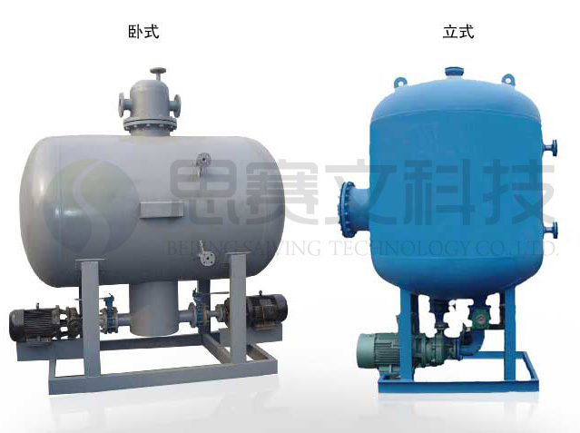

蒸汽冷凝水回收装置
-- 投资少，见效快，回报大。
SVLN系列闭式蒸汽冷凝水回收装置由我公司科研人员克服水泵高温汽蚀而开发的高科技节能环保产品，与传统开放式的蒸汽冷凝水回收水箱相比，它采用独特的水泵汽蚀消除装置实现了蒸汽冷凝水的闭式回收，彻底解决了高温冷凝水回收问题，充分回收了冷凝水二次闪蒸蒸汽，节约了能源和水资源，实现了能源的充分利用，使能源的回收利用率达到95％以上，减少了环境的热污染和冷凝水排放时的噪声，其经济效益和社会效益是巨大的。
开式回收 VS 闭式回收
- 1）传统的开式和半开式回收高温冷凝水存在以下几个问题：
- 损失的热量占疏水器疏出热量的 50 ~ 70 ％；
- 耗散软化水占冷凝水总量的5 ~ 20 ％；
- 对环境造成严重的热污染；
- 除氧水被氧气二次污染，溶氧水对水罐和用水设备造成氧腐蚀，造成冷凝水水质的变化，需要重新处理
- 2）闭式回收要面临以下技术难题：
- 疏水器后的背压提高，疏水能力降低，是否影响工艺换热。
- 闭式系统中是汽水两相共存的动态状态，很容易发生汽阻、水击。
- 冷凝水的背压不同，会发生低压冷凝水回水不畅。
- 冷凝水爬高能力下降。
- 当系统个别疏水器漏汽严重，会造成整个系统背压升高，影响好的疏水器常工作。
- 输送高温水时水泵叶轮发生汽蚀。
四大核心技术
- 解决了离心泵输送过程中高温状态下水泵发生汽蚀的问题，为高温冷凝水的顺利输送创造条件；
- 根据汽水两相流态特性解决了系统出现的汽阻、水击气锁、撞击等现象；
- 我们的蒸汽冷凝水回收装置对不同压力凝结水的共网回收、冷凝液全部回收
- 完善的自控技术、实现全自动无人值上守运行，具有免维护功能。
结构
SVLN系列闭式蒸汽冷凝水回收装置本产品由集水容器、汽水分离装置、除污装置、防汽蚀装置、耐高温水泵、安全阀、液位传感装置、自控箱等组成。
根据外型可分为：立式和卧式


实现原理
用汽设备排出的蒸汽凝结水经疏水器进入回收器，先经汽水分离装置。分离出的汽和产生的二次闪蒸汽存于容器上部。水经过除污装置，清除污物后，凝结水存于容器内。SVLN型蒸汽冷凝水回收装置的容器内水位高低由液位计指示并将信号变送给自动控制系统，控制系统依据水位高低信号指令水泵启动或关闭，当容器内的水位达到最高位时启动水泵，将凝结水输送到一定的地方；当水位降到最低水位时，水泵停止排水，防汽蚀装置确保排水泵不会产生汽蚀。安全阀当集水容器内压力高于设定压力时自动开启，确保集水容器安全。

系统流程图


产品特点
- 采用多项新技术，确保凝结水完全闭式回收，没有泄漏，节能节水效果更好。
- 可在冷凝水温度110～180℃、压力0.2～0.6MPa条件下运行，二次蒸汽无外逸，凝结水回收率≥97％，节约能源30～50％。
- 采用自主研发的消除水泵汽蚀新技术，使高温冷凝水泵不发生汽蚀，可将120℃以上的高温水送到远离供热点的用热设备中。
- 采用智能化集中控制系统，确保闭式蒸汽凝结水回收装置运行平稳、可靠、安全、高效、环保，做到无人值守傻瓜运行。
- 与我公司生产的SVYT系列低位高效热力除氧器与SVLN系列蒸汽冷凝水回收装置或其他热能回收装置连接，充分利用余热，达到除氧目的，这样既可节约蒸汽又达到更好的除氧效果，还能延长设备的使用寿命，降低设备投资。
2-6个月收回成本,真正做到“投资少，见效快，回报大”。
成功案例


技术参数与选型
按用户现场凝结水回收工况的具体参数及特殊要求进行精心设计，只有产品与客户冷凝水回收的具体参数及特殊要求相符合 才能获得最好的冷凝水回收及供热效果。因此,客户在订购SVLN型系列蒸汽冷凝水回收装置时客户须提供下列资料：
SVLN - A - 50
｜ ｜ |____处理水量50t/h
｜ ｜__________主罐体布置方向（立式、卧式）
｜______________________SVLN型系列蒸汽冷凝水回收装置
7.2. SVLN-A型蒸汽冷凝水回收装置参数说明

N1 - 排污口 N2 - 凝结水进水口 N3 - 排空气口 N5 - 调压口 L1/L2 - 液位传感器接口 N6/N8 - 水泵出口 N4 - 备用口 M - 人孔 T1/T2 - 温度计 P - 压力表 R - 安全阀口

7.3. SVLN-B型蒸汽冷凝水回收装置参数说明

N1-排污口 N2-进水口 N3-进水口 N4-二次蒸汽出口 N5-排气口 N6-备用口 N7-调压口 N8-快排口 N9-出水口 N10-出水口 N11-泄空口 T-温度计口 P-压力表口 R-安全阀口 L1~2-液位计口